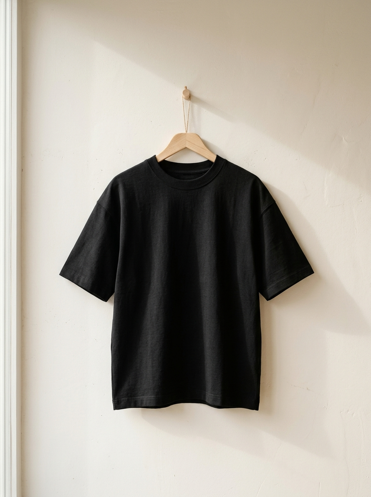

SCREEN 01Halaman Produk

360 GSMHeavyweight Boxy T-Shirt — 04 Noir
Rp 449.000 Rp 549.000
Pilih Ukuran
Detail Bahan & Kalibrasi Kain
- Material
- Stretch factor
- Susut setelah cuci
- Potongan
- Boxy, drop-shoulder